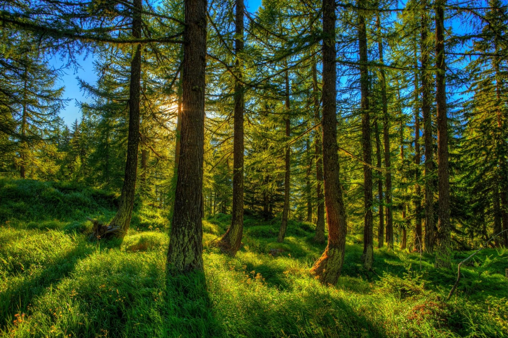
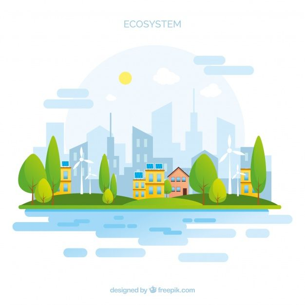

Eng yangi maqolalar
Mikroplastik
Mikroplastik – bu plastik materiallarning juda kichik zarralari bo'lib, ular ko'pincha 5 millimetrdan kichik bo'ladi. Ular atrof-muhitga turli yo'llar bilan kirib kelishi mumkin, masalan, yuvinish vositalaridan, avtomobil shinlaridan yoki yirik plastik buyumlarning parchalanishi natijasida. Mikroplastiklar suvda, tuproqda va hatto havo orqali tarqaladi va turli hayvonlar, shu jumladan, baliqlar va dengiz hayvonlari tomonidan yutib yuborilishi mumkin. Bu zarralar oziq-ovqat zanjiri orqali inson organizmiga ham kirib borishi mumkin, bu esa salomatlik uchun xavf tug'diradi. Shuningdek, mikroplastiklar atrof-muhit ifloslanishining jiddiy muammolaridan biri hisoblanadi va ularning ekologik ta'sirini kamaytirish uchun global miqyosda choralar ko'rish zarur.
Muallif: Ifora Avazova 08.22.2024
Davomi
Title of Article 2
Brief description or introduction to the article.
Read More
Eng yangi videolar
Suvni tejash va uni to'g'ri ishlatish

Suvni tejash va to'g'ri ishlatish, resurslarni samarali boshqarish va ekologik muvozanatni saqlash uchun juda muhimdir. Har birimiz uyda va kundalik hayotda suvni tejashga harakat qilishimiz kerak, masalan, dushda kamroq vaqt o'tkazish, suvni oqizmasdan yuvish yoki qishloq xo'jaligida suvni tomchilatib sug'orish usullaridan foydalanish orqali. Suvni to'g'ri ishlatish, nafaqat tabiiy resurslarni saqlashga yordam beradi, balki iqlim o'zgarishini sekinlashtirish va kelajak avlodlar uchun toza suv manbalarini ta'minlashda ham muhim rol o'ynaydi. Har bir kichik harakatimiz katta o'zgarishlarga olib kelishi mumkin.
Muallif: Binafsha Bahodirova 08.22.2024
Videoni ko'rish
O'rmonlarni muhofaza qilish

O'rmonlarni muhofaza qilish biologik xilma-xillik, iqlim o'zgarishini sekinlashtirish va yer yuzasidagi hayot sifatini yaxshilash uchun muhimdir. O'rmonlar ko'plab hayvonlar va o'simliklar uchun yashash muhitini ta'minlaydi, kislorod ishlab chiqaradi va suv resurslarini saqlaydi. Ularni himoya qilish orqali biz tuproq eroziyasini kamaytirish va mahalliy jamoalarga iqtisodiy imkoniyatlar yaratishimiz mumkin. Har birimiz o'rmonlarni asrashda o'z hissamizni qo'shishimiz mumkin, masalan, ekologik toza mahsulotlarni tanlash orqali.
Muallif: Intizor Mirzayev 08.26.2024
Videoni ko'rish
Iqlim o'zgarishi va uni bartaraf etish

Iqlim o'zgarishi, inson faoliyati natijasida atmosferaga chiqarilayotgan gazlar tufayli global haroratning oshishi bilan bog'liq muammolardan biridir. Bu jarayon tabiiy ekosistemalar, qishloq xo'jaligi va inson salomatligiga salbiy ta'sir ko'rsatadi. Iqlim o'zgarishini bartaraf etish uchun energiya manbalarini yangilanishi, uglerod izini kamaytirish va barqaror transport tizimlariga o'tish zarur. Shuningdek, har birimiz energiyani tejash, qayta tiklanuvchi energiya manbalaridan foydalanish va ekologik toza mahsulotlarni tanlash orqali iqlim o'zgarishiga qarshi kurashda o'z hissamizni qo'shishimiz mumkin. Bu harakatlar kelajak avlodlar uchun sog'lom va barqaror muhitni ta'minlashda muhim ahamiyatga ega.
Muallif: Sevara Davlatboyeva 08.26.2024
Videoni ko'rish
Shahar ekotizmlarini tiklash

Shahar ekotizmlarini tiklash, urbanizatsiya jarayonida yo'qolgan tabiiy resurslarni qayta tiklash va ekologik muvozanatni saqlash uchun muhimdir. Shaharlar ko'pincha yashil maydonlar va tabiiy ekosistemalarning yo'qolishi bilan bog'liq muammolarni duch keladi. Bunday muammolarni hal qilish uchun, shaharlarni obodonlashtirish, yashil inshootlar va parklar yaratish, shuningdek, tabiiy o'simliklarni tiklash zarur. Ushbu harakatlar nafaqat shahar aholisining hayot sifatini yaxshilaydi, balki iqlim o'zgarishiga qarshi kurashda ham muhim rol o'ynaydi. Shahar ekotizmlarini tiklash orqali, biz barqaror rivojlanish va ekologik muvozanatni ta'minlashga hissa qo'shamiz.
Muallif:Dilrabo Kuchkarova 08.26.2024
Videoni ko'rish